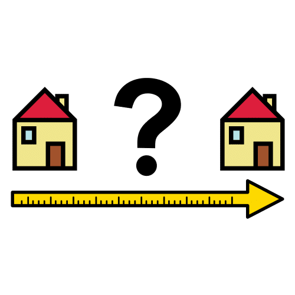

Diccionario
Distancia

Cinta métrica
")
La cinta métrica sirve para medir.
Palmo
 Definición:
Definición:
Distancia que va desde el extremo del pulgar hasta el del meñique, con la mano extendida y abierta
Ejemplo:
La mesa mide 7 palmos.
Unidades de longitud
Definición: son unidades que nos ayudan a saber la distancia entre dos puntos o entre dos objetos.
Ejemplo:
Para medir distancias entre diferentes lugares (pueblos, ciudades, etc) se utiliza el kilómetro
Para medir objetos grandes usamos el metro (una casa, una pista deportiva, etc)
Para medir objetos pequeños usamos el cm (lápiz, cuadernos, etc)
 Rétor y su pandilla están recordando lo que ya saben sobre medidas, recuerdan cómo podían medir cuando aún no conocían el metro.
Rétor y su pandilla están recordando lo que ya saben sobre medidas, recuerdan cómo podían medir cuando aún no conocían el metro.
Aprendieron a medir con su propio cuerpo, utilizando la mano, el pie, el brazo, los dedos, sus pasos, etc.
¿Serías capaz de medir distancias con tu cuerpo? ¿Qué parte de tu cuerpo utilizarías para las distancias cortas? ¿Y para las largas?
¿Les ayudas? ¡Ánimo y a seguir aprendiendo y practicando!
Definición: Espacio entre una persona o cosa y otra.
Ejemplo: La línea es la distancia más corta entre dos puntos.
Lectura facilitada
Rétor y su pandilla recuerdan las medidas.
Rétor y su pandilla recuerdan
cómo median sin el metro.
Rétor y su pandilla median con su propio cuerpo.
Rétor y su pandilla utilizaban de su cuerpo:
- La mano
- El pie
- El brazo
- Los dedos
- Sus pasos.
Pregúntate:
- Si puedes medir distancias con tu cuerpo.
- Qué parte de tu cuerpo utilizarías para las distancias cortas.
- Qué parte de tu cuerpo utilizarías para las distancias largas.
Rétor y su pandilla necesitan tu ayuda.
¡Ánimo!
¡Sigue aprendiendo!
¡Sigue practicando!


 Aprovechando que no tenemos
Aprovechando que no tenemos  ¿Cuántas te atreves a realizar?
¿Cuántas te atreves a realizar?